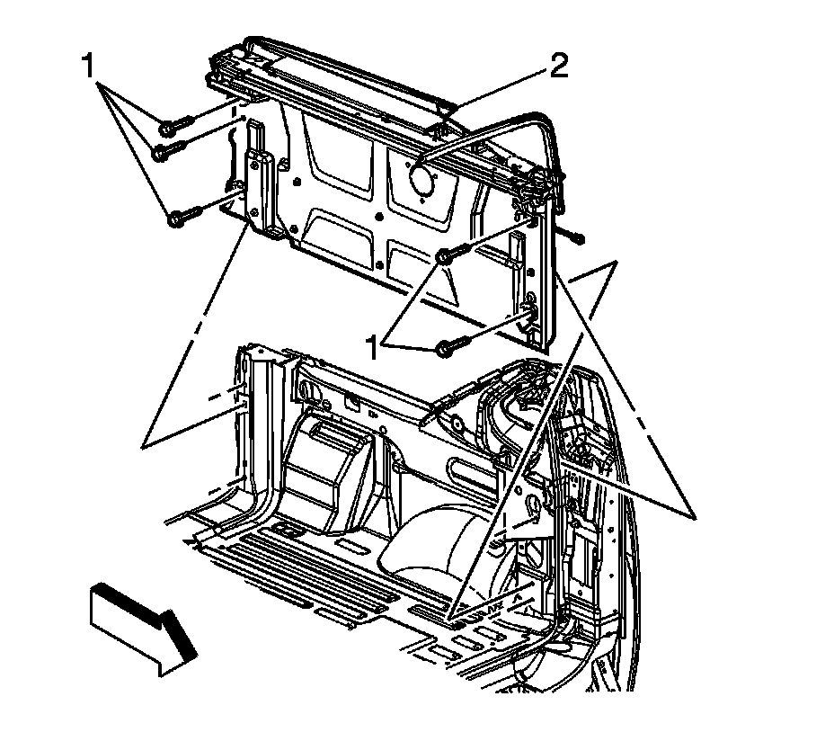

Cargo Box Stowage Box Replacement
Cargo Box Stowage Box Replacement
Removal Procedure
1. Remove the rear compartment cover assembly. Refer to Cargo Box Front Cover, Center Cover, and Rear Cover Replacement .
2. Remove the assist handle. Refer to Endgate Assist Handle Replacement (Avalanche) .
3. Remove the cargo box stowage lid assembly. Refer to Cargo Box Stowage Box Lid Replacement .

4. Remove the lamp socket from the pickup box side courtesy lamp.
5. Remove the cargo tie-down bolts and tie rings from the body side inner panel.
6. Remove the cargo box stowage box (2) from the vehicle.
Installation Procedure
Notice: Refer to Fastener Notice .
1. Install the cargo box stowage box (2) to the vehicle.
Tighten the bolts to 9 N.m (80 lb in).
2. Install the cargo tie-down rings and bolts to the body side inner panel.
Tighten the bolts to 9 N.m (80 lb in).
3. Install the cargo box stowage lid assembly. Refer to Cargo Box Stowage Box Lid Replacement .
4. Install the lamp socket to the pickup box side courtesy lamp assembly.
5. Install the assist handle. Refer to Endgate Assist Handle Replacement (Avalanche) .
6. Install the rear compartment cover assembly. Refer to Cargo Box Front Cover, Center Cover, and Rear Cover Replacement .